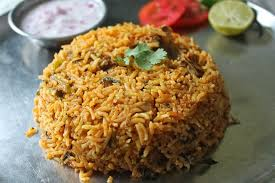

Biriyani

Biryani is a flavorful rice dish made with aromatic spices, basmati rice, and meat or vegetables.
It is one of the most popular dishes in India and many other countries.
Ingredians
- Basmati rice
- Chicken or mutton
- Onions
- Tomatoes
- Yogurt
- Biryani spices
Steps
- Marinate the chicken with yogurt and spices.
- Cook the basmati rice until partially done.
- Fry onions until golden brown.
- Cook the marinated chicken with onions and tomatoes.
- Layer the rice and chicken mixture in a pot.
- Cook on low heat until the flavors blend together.
- Serve hot with raita or salad.